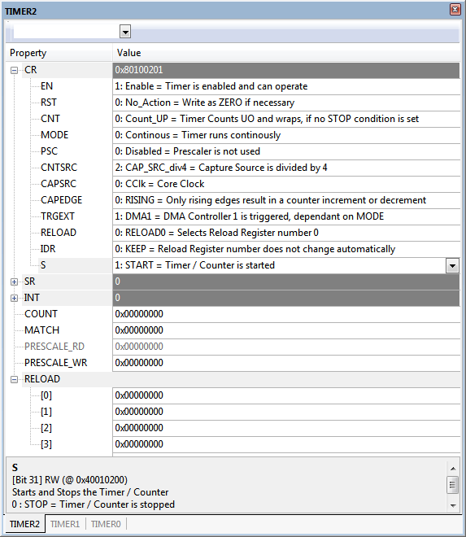
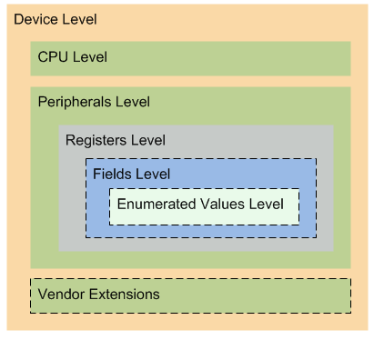

CMSIS-SVD¶
系统视图描述¶
介绍¶
CMSIS 系统视图描述格式 （CMSIS-SVD） 形式化了基于 Arm Cortex-M 处理器的微控制器中包含的系统的描述，特别是外设的寄存器内存映射。系统视图描述中包含的详细信息与设备参考手册中的数据相当。这些信息的范围从外设的高级功能描述一直到寄存器内存映射中单个位字段的定义和用途。
CMSIS-SVD 文件由芯片供应商开发和维护。芯片供应商将其描述作为 CMSIS 设备系列包的一部分分发。工具供应商使用 CMSIS-SVD 文件在其调试器中提供特定于设备的外围设备的调试视图。最后但并非最不重要的一点是，符合 CMSIS 的设备头文件是从 CMSIS-SVD 文件生成的。
CMSIS-SVD 的优势¶
- 对于软件开发人员：
- 设备头文件与调试器显示的内容之间的一致性。
- 有关外设、寄存器、字段和位值以及调试器中的命名中断的详细信息，无需参考设备文档。
- 作为芯片供应商的CMSIS器件系列包的一部分，可以方便地访问新的和更新的描述，因为这些包是由芯片供应商提供的。
- 提高软件开发效率。
- 对于芯片供应商：
- 独立于工具供应商的文件格式使各种工具链能够以有限的工作量为早期设备提供支持。
- 基于 XML 的格式有助于轻松集成到内部设计流程中。
- 自动生成符合 CMSIS 标准的设备头文件。
- 从创建到维护的整个生命周期完全控制 CMSIS-SVD 文件。
- 对于工具供应商：
- 跨芯片供应商的统一文件格式有助于及时高效地支持各种设备。
- 芯片供应商可以通过对 CMSIS 设备系列包的有限访问来提供对设备支持的早期审查访问。
- 更新的描述可通过 Web 获得，从而简化设备支持的维护。
ARM：：CMSIS Pack 中的 CMSIS-SVD¶
ARM：：CMSIS Pack 目录中存在与 CMSIS-SVD 相关的以下文件：
| 文件/文件夹 | 内容 |
|---|---|
| CMSIS\Documentation\SVD | 本文档 |
| CMSIS\Utilities | 示例 SVD 文件 （ARM_Example.svd） 和生成的头文件 （ARM_Example.h）。 |
SVD 文件验证和用法¶
描述质量是 CMSIS-SVD 格式成功的关键。质量方面是：
- 语法和结构符合指定的 CMSIS-SVD 格式。
- 一致性和正确性。
- 完整性。
- 详细程度。
验证¶
自动验证在两个级别上完成：
- CMSIS-SVD 模式文件：XML 工具使用模式文件来检查声称符合特定格式的 XML 文件的语法和结构正确性。模式文件 CMSIS-SVD.xsd 位于 ARM：：CMSIS 包的文件夹 .\CMSIS\Utilities 中。
- SVD 转换实用程序：转换实用程序 SVDConv 实用程序检查 CMSIS-SVD 文件中包含的数据的语义和一致性。SVDConv 包含在 CMSIS 发行版中。
用法¶
CMSIS-SVD 文件可用于生成：
- CMSIS-SVD 描述中符合 CMSIS 的设备头文件。CMSIS 设备头文件由芯片供应商开发和维护。因此，预计这种转换只对这些各方感兴趣。
- 与调试器通信的调试对话框。见下文。
系统视图
许多工具供应商的产品都支持 CMSIS-SVD 格式。请参阅工具文档，了解如何将 CMSIS-SVD 描述与所选调试器一起使用。请定期检查芯片供应商对 CMSIS 设备系列包的更新，以使用最新版本的 CMSIS-SVD 文件。
生成的调试对话框：

uVision Debug Window generated from ARM_Example.svd
SVDConv 实用程序¶
SVDConv 是一个命令行实用程序，用于验证 CMSIS-SVD 文件并生成符合 CMSIS 的设备头文件。SVDConv 与 ARM：：CMSIS 包（在 CMSIS\Utilities 目录中）以及 CMSIS-SVD.xsd 模式文件一起分发。SVDConv 可用于 Windows 和 Linux作系统。
SVDConv 执行以下作：
- 检查语法和结构是否符合指定的 CMSIS-SVD 格式。
- 根据 CMSIS-SVD 模式文件检查 CMSIS-SVD 文件的一致性、正确性和完整性。
- 生成符合 CMSIS 标准的设备头文件，可用于软件开发。
Tip
考虑使用 --strict 选项来接收所有过时的警告。由于向后兼容性原因，默认情况下会跳过某些规则。所有新开发/更新的 SVD 文件都应遵守所有规则。
操作¶
从命令行调用 SVDConv。一般命令格式为：
SVDConv.exe <SVD_file> <options>
示例¶
- 在屏幕上检索帮助信息。
SVDConv - 通过仅传递 SVD 文件名来执行一致性检查。错误和警告打印在屏幕上。
结果打印在屏幕上：
SVDConv ARM_Example.svdMVCM3110.svd(1688) : info <description> missing for value '2 : MODE2' MVCM3110.svd(1692) : info <description> missing for value '3 : MODE3' MVCM3110.svd(1696) : info <description> missing for value '4 : MODE4' Area of improvements: * Description contains 267 <fields> defined without associated <enumeratedValues> Found 0 Errors and 1 Warnings Return Code: 1 (WARNINGS) - 生成头文件。执行一致性检查。错误和警告打印在屏幕上。
生成的头文件中的代码片段显示了 TIMER0 的结构。
SVDConv ARM_Example.svd --generate=header/* ================ TIMER0 ================ */ typedef struct { __IO uint32_t CR; __IO uint16_t SR; __I uint16_t RESERVED0[5]; __IO uint16_t INT; __I uint16_t RESERVED1[7]; __IO uint32_t COUNT; __IO uint32_t MATCH; union { __O uint32_t PRESCALE_WR; __I uint32_t PRESCALE_RD; }; __I uint32_t RESERVED2[9]; __IO uint32_t RELOAD[4]; } TIMER0_Type; - 生成包含位字段的头文件。执行一致性检查。错误和警告打印在屏幕上。
生成的头文件中的代码片段显示了 TIMER0 的结构。
SVDConv ARM_Example.svd --generate=header --fields=struct
与上面的代码片段进行比较。/* ================ TIMER0 ================ */ typedef struct { union { __IO uint32_t CR; struct { __IO uint32_t EN : 1; __O uint32_t RST : 1; __IO uint32_t CNT : 2; __IO uint32_t MODE : 3; __IO uint32_t PSC : 1; __IO uint32_t CNTSRC : 4; __IO uint32_t CAPSRC : 4; __IO uint32_t CAPEDGE : 2; uint32_t : 2; __IO uint32_t TRGEXT : 2; uint32_t : 2; __IO uint32_t RELOAD : 2; __IO uint32_t IDR : 2; uint32_t : 3; __IO uint32_t S : 1; } CR_b; }; union { __IO uint16_t SR; struct { __I uint16_t RUN : 1; uint16_t : 7; __IO uint16_t MATCH : 1; __IO uint16_t UN : 1; __IO uint16_t OV : 1; uint16_t : 1; __I uint16_t RST : 1; uint16_t : 1; __I uint16_t RELOAD : 2; } SR_b; }; __I uint16_t RESERVED0[5]; union { __IO uint16_t INT; struct { __IO uint16_t EN : 1; uint16_t : 3; __IO uint16_t MODE : 3; } INT_b; }; __I uint16_t RESERVED1[7]; __IO uint32_t COUNT; __IO uint32_t MATCH; union { __O uint32_t PRESCALE_WR; __I uint32_t PRESCALE_RD; }; __I uint32_t RESERVED2[9]; __IO uint32_t RELOAD[4]; } TIMER0_Type;
SVD 描述 （*.svd） 格式¶
CMSIS-SVD 格式基于 XML，并受到 IP-XACT 的影响。由于 IP-XACT 的范围和复杂性要广泛得多，因此决定指定一种单独的格式，专注于和定制程序员对设备视图的描述。
CMSIS-SVD XML 层次结构

CMSIS-SVD 层次结构级别¶
一个 CMSIS-SVD 文件包含单个设备的描述。设备由一个处理器和至少一个外设组成。每个外设至少包含一个寄存器。寄存器可以包含一个或多个字段。字段的值范围可以用枚举值进一步描述。
- File Conventions：概述编写 SVD 描述文件的主要约定。
- SVD 文件示例：提供概述 SVD XML 结构的示例。
- 设备级别：系统视图描述的顶层是设备。在此级别上，捕获特定于整个设备的信息。例如，设备名称、描述或版本。调试器需要最小可寻址单元以及数据总线的 bit-width 来执行正确的 target 访问。
寄存器属性的默认值（如 register size、reset value 和 access permissions）可以在此级别为整个器件设置，并由较低级别的描述隐式继承。但是，如果在较低级别上指定，则较高级别的默认设置将被否决。 - CPU 级别：CPU 部分描述了微控制器设备中包含的处理器。如果使用 SVD 文件生成设备头文件，则此部分是必需的。
- 外设级别： 外设是寄存器的命名集合。外设映射到器件地址空间内定义的基址。外设相对于其基址分配一个或多个独占地址块，以便所有描述的寄存器都适合分配的地址块。没有关联寄存器描述的已分配地址将自动被视为保留地址。外围设备可以分配给一组外围设备，并且可以与一个或多个中断相关联。
- Registers Level： 寄存器是属于外设的命名可编程资源。寄存器被映射到器件地址空间中的已定义地址。地址是相对于外围基址指定的。寄存器的描述记录了资源的用途和功能。调试器需要有关允许访问资源的信息，以及分别由读取和写入访问触发的副作用。
- Fields Level：寄存器可以被划分为具有不同功能的位块。块称为 field。单个 register 中的字段名称必须是唯一的。仅应描述架构定义的字段。任何未明确描述的位都被视为保留位。它们不显示在 System Viewer 中，而是填充在设备头文件的位字段中。名为 “reserved” 的不区分大小写的字段被视为关键字，并忽略具有此名称的每个字段。
- 枚举值级别：枚举将无符号整数常量映射到描述性标识符，并选择性地映射到描述字符串。在 C 语言中使用枚举来增强源代码的可读性。同样，调试器可以使用它来向程序员提供更具有指导性的信息，从而避免在设备文档中查找。
- 特殊元素：本节介绍了出现在各种其他元素中的特定元素。
- 供应商扩展：CMSIS-SVD 格式包括一个名为
<vendorExtensions>位于结束标记</peripherals>之后的部分。这允许芯片供应商和工具合作伙伴将描述扩展到当前规范之外。
多重实例化¶
CMSIS-SVD 支持重用描述的整个部分。外围设备、寄存器和字段的 derivedFrom 属性指定要从中复制的部分的源。单个标签可用于重新定义复制部分中的特定元素。
元素数组¶
C 编程语言数据结构中一个强大的结构是数组。数组是通过索引选择的一系列相同类型的数据元素。CMSIS-SVD 支持外设、集群和寄存器的阵列。
外设分组¶
提供类似功能的外围设备（简单定时器、复杂定时器）可以使用<groupName>元素分组。外围设备组有助于构建调试器中的外围设备列表。与同一组名称关联的所有外围设备都按照 SVD 文件中指定的顺序汇总列出在此组下。
描述¶
在每个级别上，标签<description>提供有关相应元素的详细信息。描述字段在提高软件开发效率方面发挥着重要作用，因为它可以即时访问需要在设备文档中查找的信息。
所有多个空格字符（空格、制表符、换行符、回车符）都可以由任何工具从描述中删除以进行进一步处理（即 SVDConv 可以）。为了保留显式换行符，必须使用换行转义序列（即 \n）。